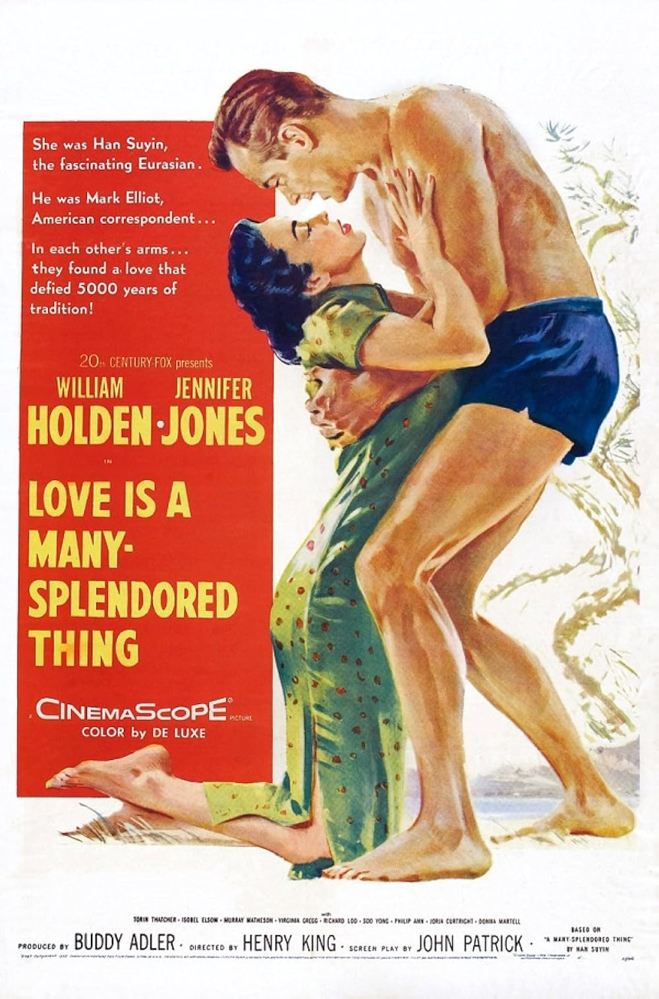

Love Is a Many-Splendored Thing
28th Academy Awards
(Oscars 1956)
8 Nominations, 3 Awards
| Nominations | ||
|---|---|---|
| Category | Nominees | Result |
| Best Motion Picture | Buddy Adler | Nominated |
| Actress | Jennifer Jones | Nominated |
| Cinematography (Color) | Leon Shamroy | Nominated |
| Art Direction (Color) | George W. Davis, Jack Stubbs, Lyle Wheeler, and Walter M. Scott | Nominated |
| Costume Design (Color) | Charles LeMaire | Won |
| Sound Recording | Carl W. Faulkner | Nominated |
| Music (Music Score of a Dramatic or Comedy Picture) | Alfred Newman | Won |
| Music (Song) "Love Is A Many-Splendored Thing" |
Paul Francis Webster and Sammy Fain | Won |